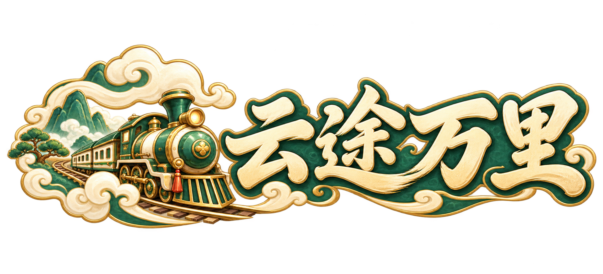

brand_main
1860 × 845 · 原生图
下载透明 PNG道家 Q 版手绘 · 交通线路建设与产业运输经营

主 Logo 用于启动和主菜单，建议宽度至少 480px。小入口使用独立图标；128px 以上更清楚，64px 保留列车与云环轮廓。保持等比缩放。
1860 × 845 · 原生图
下载透明 PNG1254 × 1254 · 原生图
下载透明 PNG1024 × 465 · 等比缩小
下载透明 PNG512 × 233 · 等比缩小
下载透明 PNG512 × 512 · 等比缩小
下载透明 PNG256 × 256 · 等比缩小
下载透明 PNG128 × 128 · 等比缩小
下载透明 PNG64 × 64 · 等比缩小
下载透明 PNG